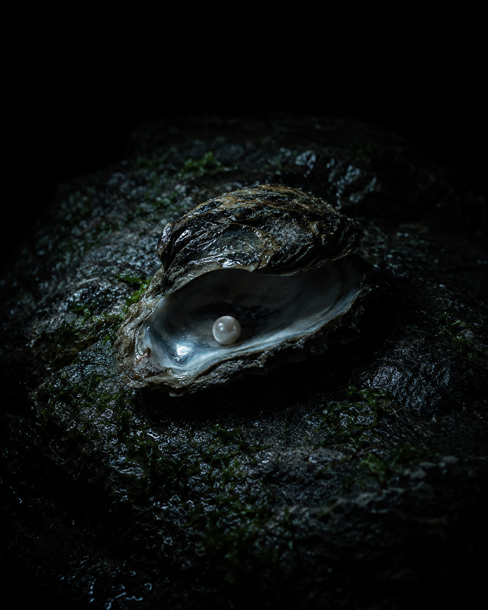

LA RISPOSTA È QUASI SEMPRE LÌ.
Quello che non si chiede non si trova.
La domanda è la chiave. Quasi tutte le informazioni di un progetto esistono già — sepolte sotto la convenzione di non chiederle.


La domanda è la chiave. Quasi tutte le informazioni di un progetto esistono già — sepolte sotto la convenzione di non chiederle.